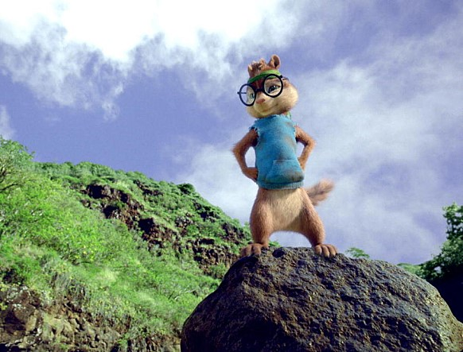

앨빈
앨빈과 슈퍼밴드의 리더이자 사고뭉치.
말릴 수 없는 장난끼를 가지고 있어 때로는 주위사람을 힘들게 하지만
특유의 긍정적임과 발랄함을 통해 앨빈과 슈퍼밴드를 유명하게 만드는 장본인.
타고난 노래와 춤 실력으로 예.쁜.여.자.를 유혹하는 것이 특기
데이브
앨빈과 슈퍼밴드의 아빠이자 매니저.
아무도 몰라주는 작사가이지만 말하는 다람쥐를 만나 대박이 나게 된다.
좋아하는 여자가 있지만 무능력한 모습때문에 고백을 못하다가 앨빈 덕분에 사랑을 이루게 된다.
다람쥐들의 사고를 수습하는게 특기

사이먼
앨빈과 슈퍼밴드의 장신이자 똑똑이.
시력이 안 좋아 데이브가 준 안경을 쓰고 다닌다.
테오도르를 엄마같이 챙겨주고 내성적이며 소심하다.
엄격하게 규칙을 지키는게 특기

테오도르
앨빈과 슈퍼밴드의 막내이자 귀요미.
데이브 집에서 우연히 먹게 된 치즈볼을 사랑하고
누구보다 무서움을 싫어하고 혼자있는 것을 싫어한다.
많이 먹는게 특기이고 순.수.그자체이다.
▲▲▲▲위로 가기▲▲▲▲